Grafieke
In hierdie hoofstuk gaan jy van ’n nuwe soort grafiek leer: die lyngrafiek. ’n Lyngrafiek wys hoe een veranderlike ’n ander veranderlike beïnvloed. Jy gaan spesifiek met globale grafieke te doen kry. Op hierdie grafieke kan ’n mens sien hoe veranderlikes verander en is die fokus op tendense, eerder as op presiese metings.
’n grafiek het ’n storie
1. Jena het hierdie grafiek getrek om te wys hoe haar hongergevoel gedurende die dag verander het. Beskryf in ’n kort paragraaf hoe haar dag verloop het volgens haar behoefte aan kos.
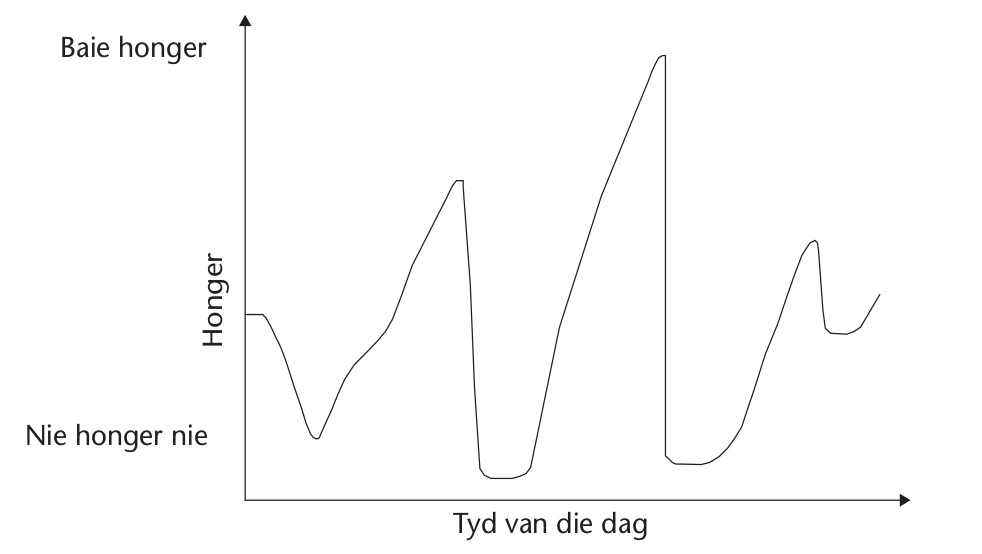
2. Dink aan ’n bepaalde dag en wat met jou op daardie dag gebeur het. Trek ’n grafiek om te wys hoe jou gevoelens gedurende die dag verander het.
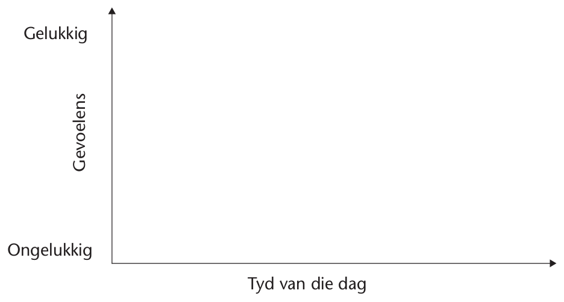
Ondersoek die tempo van verandering in situasies
Vergelyk situasies en stel hulle op ’n ander manier voor
1. Kyk na die situasies in (a) en (b) hier onder en voltooi die gegewe tabel om elke verband voor te stel.
(a) Sally spaar elke week R4 om ’n CD te koop wat sy baie graag wil hê.
|
Getal weke |
1 |
2 |
3 |
4 |
5 |
6 |
7 |
8 |
|
Geld gespaar in rand |
4 |
8 |
(b) Daar is 24 sjokolades in ’n boks. Nathi dink daaraan om die sjokolades gelykop onder ’n paar van sy maats te verdeel en werk uit hoeveel elke maat sou kry.
|
Getal maats |
1 |
2 |
3 |
4 |
5 |
6 |
7 |
8 |
|
Sjokolades per maat |
24 |
12 |
(c) Teken staafgrafieke op die grafiekroosters om elk van die verbande in (a) en (b)voor te stel. Die lengte van elke staaf moet ’n uitvoergetal voorstel.
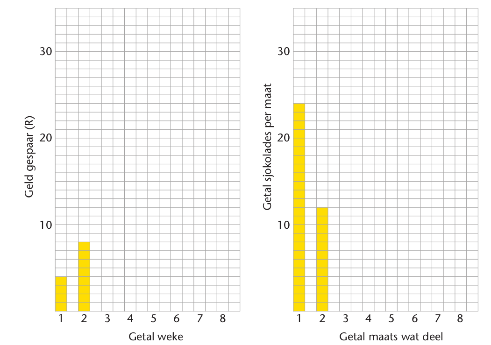
2. Beskou die situasies in (a) en (b) hier onder en voltooi die tabelle om die verband in elke situasie voor te stel.
(a) Vusi tel akkers op vir ’n varkboer wat hom per sak betaal. Vusi dink: “Ek wens mnr. Bengu wil my R1 vir die eerste sak betaal, R2 vir die tweede sak, R4 vir diederde sak en so voortgaan om die bedrag vir elke volgende sak te verdubbel.”
|
Getal sakke |
1 |
2 |
3 |
4 |
5 |
6 |
7 |
|
Betaling (R) |
1 |
2 |
4 |
8 |
(b) Judy werk die oppervlakte van vierkante met verskillende sylengtes uit.
|
Sylengte van vierkant (cm) |
1 |
2 |
3 |
4 |
5 |
6 |
7 |
|
Oppervlakte van vierkant (cm2) |
1 |
4 |
(c) Teken staafgrafieke op die grafiekroosters om elk van die verbande in (a) en (b) voor te stel. Die lengte van elke staaf moet ’n uitvoergetal voorstel.
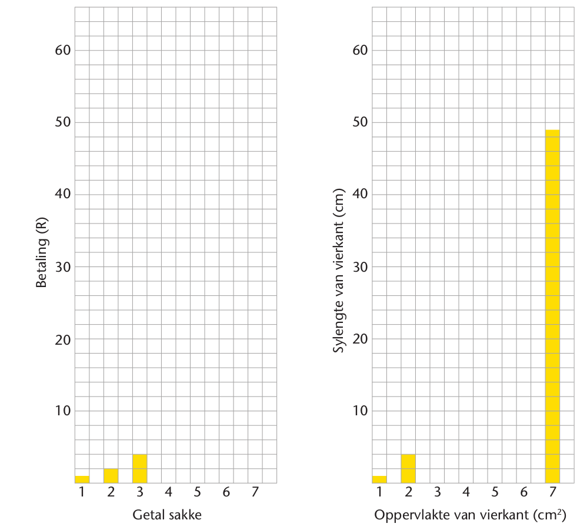
3. Die invoergetalle van die verskillende verbande in vrae 1 en 2 is dieselfde, maar die uitvoergetalle verskil. Beskryf hoe die uitvoergetalle in elkeen van die vier gevalle verander.
4. Beskryf kortliks hoe die vorm van die staafgrafieke verskil.
5. Kyk weer na die tabelle van die waardes wat jy vir die vier verbande in vrae 1 en 2 uitgewerk het. Kyk hoe die uitvoerwaardes verander het deur die verskil tussen die opeenvolgende uitvoerwaardes te bereken :
(a) Sally se spaargeld:
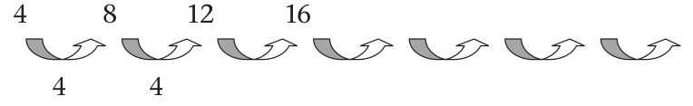
Sally se spaargeld groei elke week met ’n
(b) Sjokolades per maat:
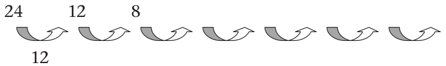
Die getal sjokolades per maat
(c) Vusi se loon per sak:
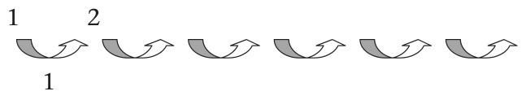
Die bedrag vermeerder eers stadig maar dan
(d) Oppervlakte van vierkante:
Die oppervlakte van die vierkante
Die geld wat Sally per week spaar bly konstant. Die verband het dus ’n konstante tempo van verandering.
Die getal sjokolades per maat verander met elke maat wat bykom. Dit verander vinnig aan die begin en dan verander dit stadiger, dus is die tempo van verandering nie konstant nie.
Die bedrag wat Vusi per sak sou wou ontvang groei vinniger en vinniger met elke sak wat bykom. Die tempo van verandering neem vinnig toe.
Die oppervlakte van ’n vierkant vermeerder meer en meer vir elke cm wat by die lengte van ’n sy gevoeg word.
Die tempo van verandering is hoe vinnig of stadig verandering per tydeenheid plaasvind.
6. Kyk na die staafgrafieke in vrae 1 en 2 en vergelyk die vorm van die grafiek met die tempo van verandering van die verband.
Interpreteer grafieke
Lees grafieke
1. Kyk noukeurig na hierdie grafiek.
(a) Wat sê die grafiek vir jou?
(b) Verduidelik jou antwoord op vraag (a).
2. Mnr. Thatcher het drie plante in houers gekoop. Die verkoopsman by die kwekery het hom vertel dat die een plant, Glamiolus, teen ’n konstante tempo groei. Die tweede een, Bouncy Bess, groei stadig aan die begin maar dan al hoe vinniger. Die verkoopsman was onseker oor die tempo waarteen die derde plant, Samara, groei.
(a) Wat beteken “groei teen ’n konstante tempo”?
Mnr. Thatcher het die drie plante elke week gemeet en hulle hoogtes in ’n tabel aangeteken. Sy tabel verskyn hier onder.
(b) Bereken die verskil in hoogte van week tot week om die tempo te bepaal waarteen elke plant per week groei.
|
Week |
Hoogte van A (cm) |
Hoogte van B (cm) |
Hoogte van C (cm) |
|
1 |
6 |
8,3 |
10,1 |
|
2 |
6,3 |
10,2 |
10,6 |
|
3 |
6,4 |
12,2 |
11,2 |
|
4 |
7,2 |
14,1 |
11,9 |
|
5 |
7,3 |
16,2 |
12,8 |
|
6 |
7,4 |
18,3 |
13,9 |
|
7 |
9,1 |
20,2 |
15,8 |
(c) Watter plant is plant A, watter plant is plant B en watter plant is plant C? Verduidelik hoe jy jou antwoorde gekry het.
(d) Die drie grafieke hier onder wys hoe die drie plante gegroei het. Wattter plant se groei word deur watter grafiek uitgebeeld? Verduidelik.
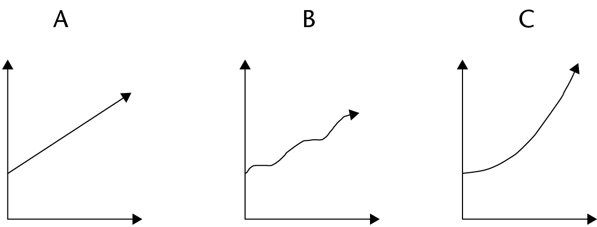
Kyk weer na verandering en tempo van verandering
In afdeling 5.2 het jy die manier waarop verbande verander, vergelyk.
1. Dink oor die volgende situasies:Ben spaar elke week R5 en Sally spaar elke week R7.Charlie spaar die eerste week R5, die volgende week R6, en R7 die week daarna. Hy verhoog die bedrag wat hy spaar elke week met R1.
(a) Die grafiek wys hoe Ben spaar. Dui op dieselfde grafiek aan hoe Sally en Charlie se spaargeld groei.
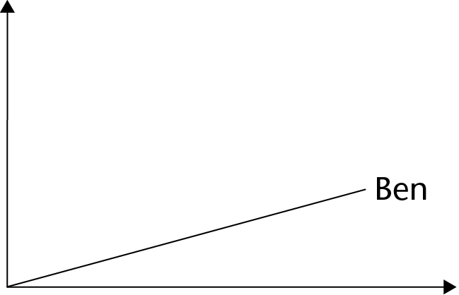
(b) Beskryf en verduidelik die vorm van die grafieke van Sally, Ben en Charlie se spaargeld.
Die tempo van verandering in ’n verband beïnvloed die helling van die grafiek. Hoe hoër die tempo van verandering ( d.w.s. hoe vinniger die uitvoergetalle verander) hoe steiler is die grafiek.
2. Ondersoek die volgende verbande. Voltooi die tabelle en bereken die verskille tussen die uitvoergetalle wat met pyltjies aangedui is.
(a) Christien wil ’n boek vir haar gunstelingonderwyser koop. Die boek kos R240,wat vir haar baie is om te betaal. Sy besef dat as sy haar vriendin Beatrice vra om die koste te help dra, sal hulle elkeen slegs R120 hoef te betaal. Sy kan selfs nog meer klasmaats vra of hulle ’n aandeel aan die geskenk wil hê en dus die koste sal deel. Christien ondersoek die situasie en bereken hoeveel elkeen sal moet betaal as hulle die koste gelykop verdeel.
(b) Ondersoek die verband tussen die lengte van ’n sy van ’n vierkant en die omtrekvan die vierkant.
(c) Ondersoek die verband tussen die lengte van ’n sy van ’n vierkant en dieoppervlakte van die vierkant.
(d) ’n Lang kers is aangesteek en sy lengte is elke uur gemeet terwyl dit gebrand het.
3. Koppel elkeen van die grafieke hier onder met ’n situasie in vraag 2.
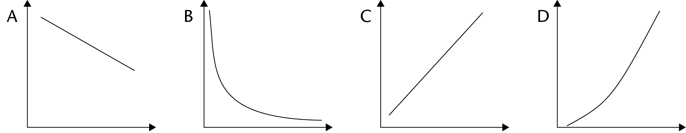
Skryf die letter van die grafiek langs die toepaslike beskrywing van die situasie:
(a) Koop ’n boek vir die onderwyser
(b) Sylengte van ’n vierkant en die omtrek van die vierkant
(c) Sylengte van ’n vierkant en die oppervlakte van die vierkant
(d) Lengte van die kers en die getal ure wat dit brand
As ons die groei (of verandering) in ’n verband ondersoek, kyk ons na die manier waarop die uitvoergetalle verander.
Die verandering kan soos volg wees:
- ’n toename (vermeerdering) of afname (vermindering)
- ’n konstante toename, byvoorbeeld die omtrek van ’n vierkant soos wat die sylengte toeneem
- ’n konstante afname of vermindering, byvoorbeeld die lengte van die kers
- ’n toename wat nie konstant is nie maar al hoe vinniger gebeur, byvoorbeeld die oppervlakte van ’n vierkant soos wat die sylengte toeneem
- ’n afname wat nie konstant is nie maar al hoe vinniger gebeur, byvoorbeeld die hoeveelheid geld wat elke klasmaat moet bydra soos wat meer klasmaats bykom.
In die geval van ’n toename het die grafiek so ’n helling:
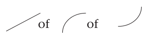
In die geval van ’n afname het die grafiek so ’n helling:
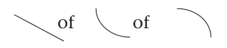
As die toename of afname konstant is, is die grafiek ’n reguit lyn en word ’n lineêre grafiek genoem.
4. Kyk weer na die grafieke in vraag 3 op die vorige bladsy.
(a) Watter grafieke stel ’n lineêre toename of afname voor?
(b) Watter grafieke stel ’n afname of toename voor wat nie konstant is nie?
5. Pieter se pa laai hom elke oggend by die skool af. Hier onder is ’n grafiek van hulle rit skool toe. Beskryf wat die grafiek jou van die rit vertel. Wat word jy daaruit wys oor hulle roete ?
Skool toe: spoedveranderings
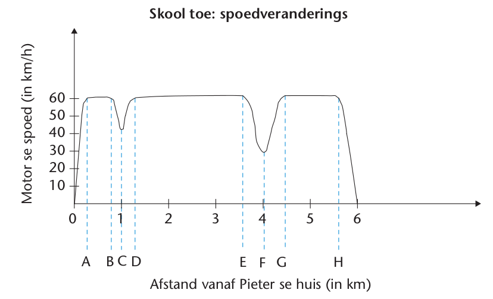
6. Beskou die grafiek in vraag 5. Identifiseer die gedeeltes van die grafiek wat ’n toename toon, ’n afname toon, en die wat konstant bly.
0 tot A:
A tot B:
B tot C:
C tot D:
D tot E:
E tot F:
F tot G:
G tot H:
H tot 6:
Ondersoek nog grafieke
1. Janet gaan bad. Hierdie grafiek wys hoe die vlak van die water in die bad verander. Die water loop teen ’n konstante tempo in die bad in. Bekyk die grafiek aandagtig en beskryf wat gebeur.
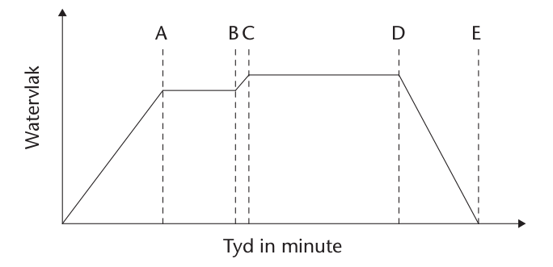
2. Die asse van hierdie grafiek is nie benoem nie.
Die vertikale as is die een wat van onder na bo gaan. Die horisontale as gaan van links na regs.
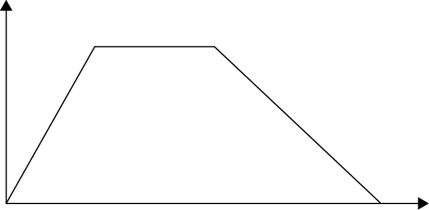
(a) Watter van die volgende beskrywings kan van toepassing wees?
A: vertikale as : tydverloop; horisontale as: afstand vanaf die huis
B: vertikale as : afstand vanaf die huis; horisontale as: tydverloop
C: vertikale as : reënval; horisontale as: temperatuur
(b) Beskryf die storie wat die grafiek met die asse wat jy gekies het, vertel.
3. Hierdie grafiek wys hoe drie atlete A, B en C die afstand in ’n hekkies-wedloop in ’n bepaalde tyd aflê.
(a) Beskryf wat waarskynlik tydens die wedloop gebeur het.
’n Hekkies-wedloop
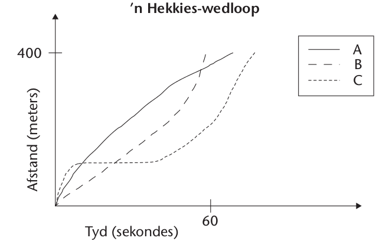
g(b) Hoe ver was die wedloop?
(c) Watter van die drie atlete het gewen?
(d) Het die beste atleet gewen? Verduidelik jou antwoord.
4. Identifiseer die grafieke (of dele van ’n grafiek) in vrae 1, 2 en 3 hier bo wat lineêr is en die wat nie-lineêr is.
Teken grafieke
1. Water drup teen ’n konstante tempo in drie houers, A, B en C, in. Die houers word hier onder gewys. Teken ’n grafiek om te wys hoe die watervlak in die houers oor tyd sal verskil.
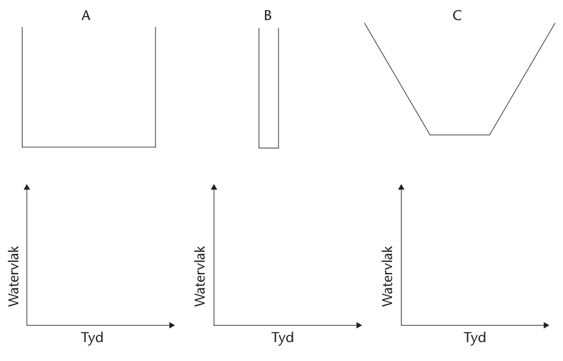
2. Teken ’n grafiek om die vlak van die water in ’n swembad aan te dui as die swembad met ’n konstante stroom water gevul word.
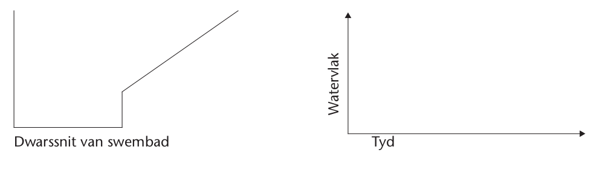
3. Teken ’n grafiek om die spoed van ’n resiesmotor te wys soos dit om die baan hier onder links aangedui, jaag. S is die beginpunt.
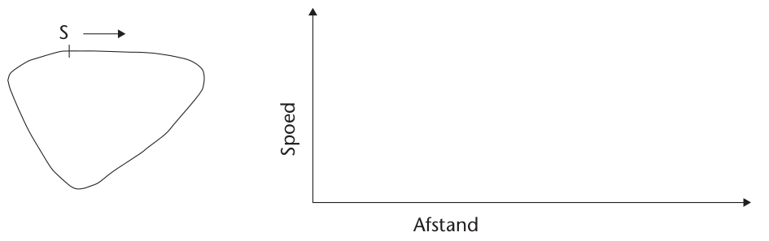
4. In die Wes-Kaap reën dit in die winter, maar in die somer is dit gewoonlik droog. Teken ’n globale grafiek om die gemiddelde reënval in die Wes-Kaap oor een jaar voor te stel.
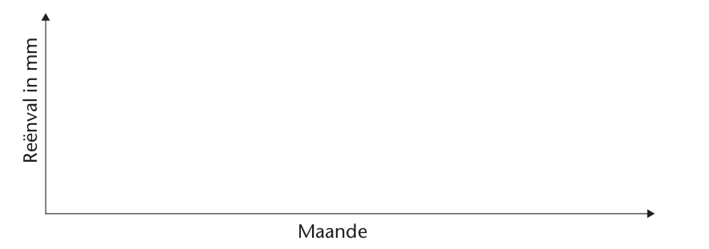
5. Teken ’n grafiek om die volgende gebeure te illustreer:
Lydia het gedurende ’n reënstorm ’n maatbeker buite neergesit om te meet hoeveel dit reën. Na 10 minute se harde reën was die watervlak op 10 mm. Dit het toe sagter begin reën, en na ’n verdere 20 minute was die watervlak op 15 mm.
Toe Lydia 10 minute later teruggaan, het die maatbeker 30 mm gewys. ’n Uur nadat die storm begin het, was die watervlak nog steeds op 30 mm.
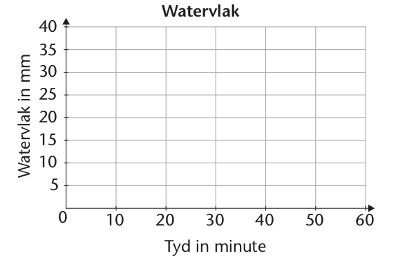